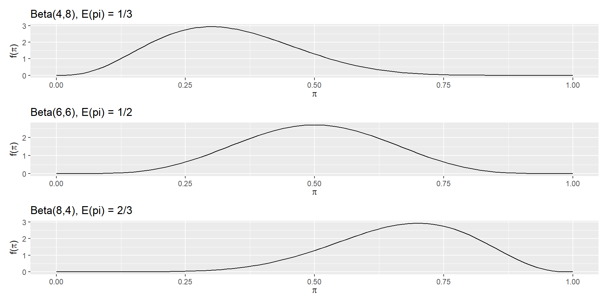
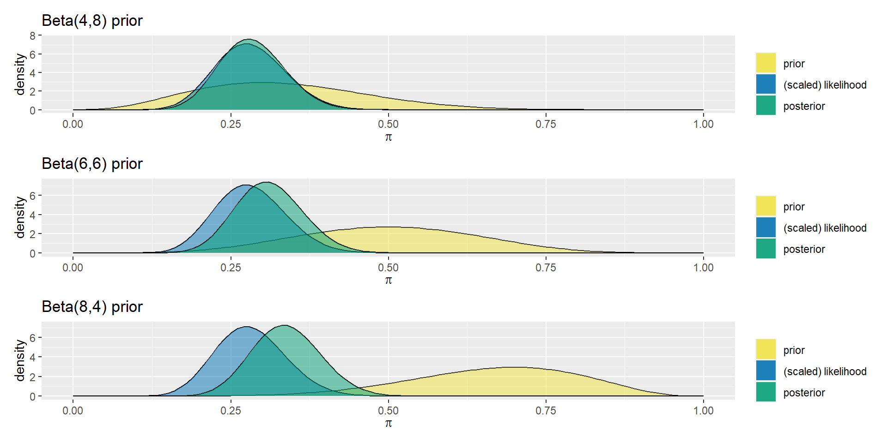
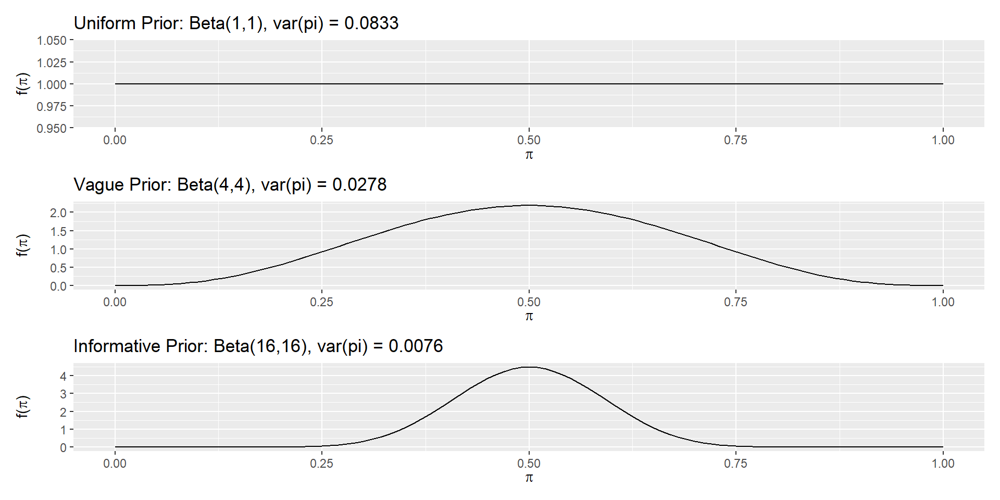
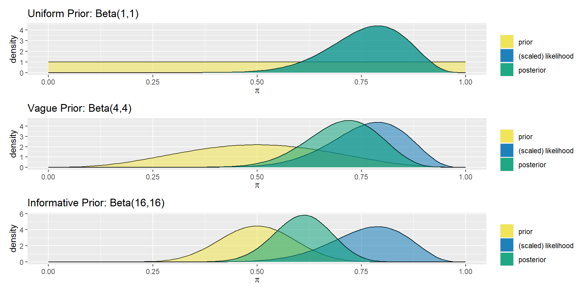
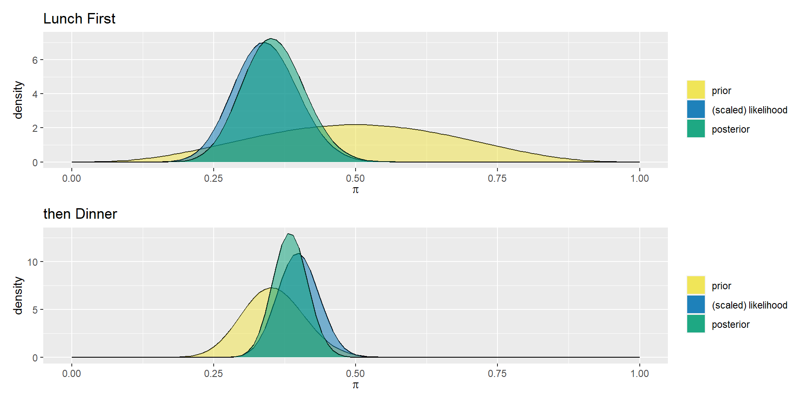
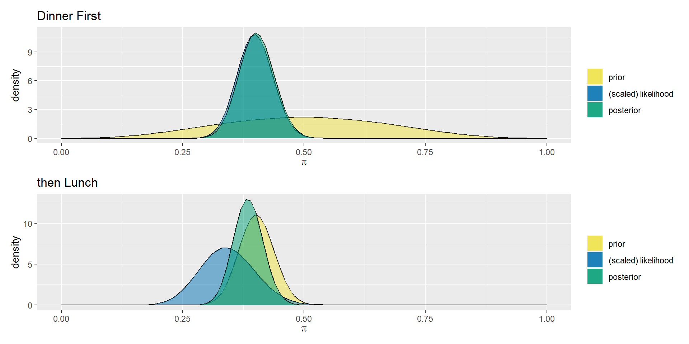
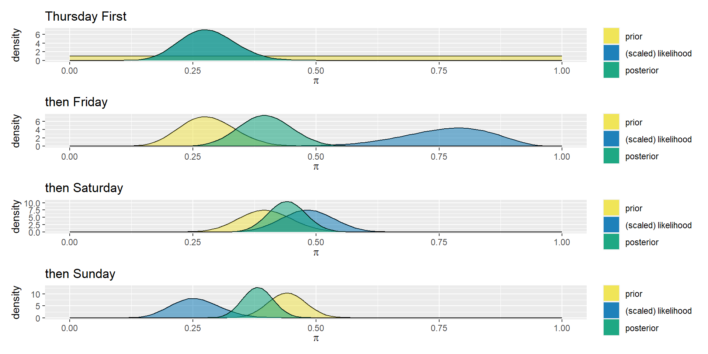
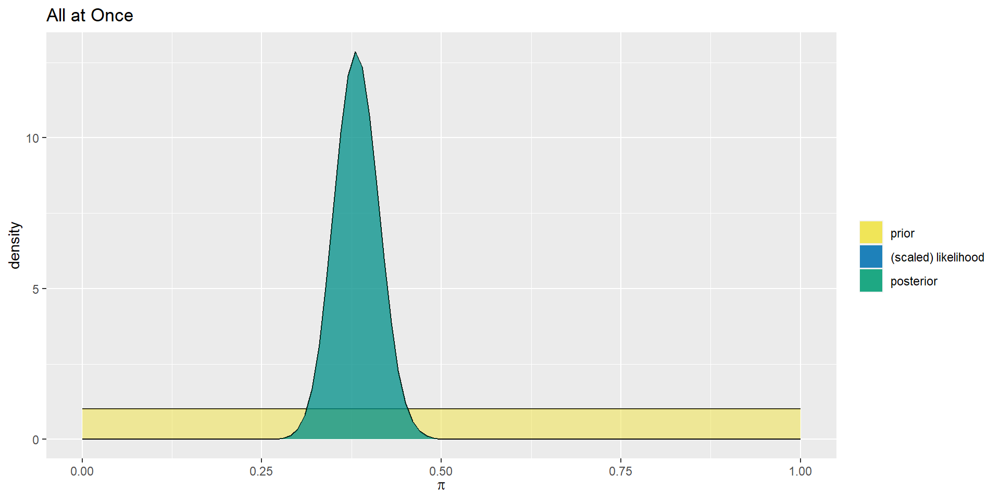

2024-02-08
With hopes of learning more about a target probability \[\pi \in [0,1]\] we have been applying beta-binomial models
\[\begin{array}{rrcl} \text{prior: } & \pi & \sim & \text{Beta}(\alpha, \beta) \\ \text{likelihood: } & Y|\pi & \sim & \text{Bin}(y, \pi) \\ \text{posterior: } & \pi|(Y = y) & \sim & \text{Beta}(\alpha + y, \beta + n - y) \\ \end{array}\]
plot_betaplot_beta_binomialp1 <- bayesrules::plot_beta_binomial(4, 8, y_Thursday, n_Thursday) +
labs(title = "Beta(4,8) prior")
p2 <- bayesrules::plot_beta_binomial(6, 6, y_Thursday, n_Thursday) +
labs(title = "Beta(6,6) prior")
p3 <- bayesrules::plot_beta_binomial(8, 4, y_Thursday, n_Thursday) +
labs(title = "Beta(8,4) prior")
# patchwork
p1 / p2 / p3
bayesrules::summarize_beta_binomial(4, 8, y_Thursday, n_Thursday) |>
mutate_if(is.numeric, round, digits = 4) model alpha beta mean mode var sd
1 prior 4 8 0.3333 0.3000 0.0171 0.1307
2 posterior 21 53 0.2838 0.2778 0.0027 0.0521
p1 <- bayesrules::plot_beta(1,1) +
labs(title = "Uniform Prior: Beta(1,1), var(pi) = 0.0833")
p2 <- bayesrules::plot_beta(4,4) +
labs(title = "Vague Prior: Beta(4,4), var(pi) = 0.0278")
p3 <- bayesrules::plot_beta(16,16) +
labs(title = "Informative Prior: Beta(16,16), var(pi) = 0.0076")
# patchwork
p1 / p2 / p3p1 <- bayesrules::plot_beta_binomial(1, 1, y_Friday, n_Friday) +
labs(title = "Uniform Prior: Beta(1,1)")
p2 <- bayesrules::plot_beta_binomial(4, 4, y_Friday, n_Friday) +
labs(title = "Vague Prior: Beta(4,4)")
p3 <- bayesrules::plot_beta_binomial(16, 16, y_Friday, n_Friday) +
labs(title = "Informative Prior: Beta(16,16)")
# patchwork
p1 / p2 / p3
bayesrules::summarize_beta_binomial(1, 1, y_Friday, n_Friday) |>
mutate_if(is.numeric, round, digits = 4) model alpha beta mean mode var sd
1 prior 1 1 0.5000 NaN 0.0833 0.2887
2 posterior 16 5 0.7619 0.7895 0.0082 0.0908With a \(\text{Beta}(\alpha, \beta)\) prior distribution along with a posterior distribution \(\text{Beta}(\alpha + y, \beta + n - y)\) from observing \(y\) “successes” in \(n\) trials, we have their respective expected values,
\[\text{E}(\pi) = \displaystyle\frac{\alpha}{\alpha + \beta}, \quad \text{E}(\pi|Y = y) = \displaystyle\frac{\alpha + y}{\alpha + \beta + n}\] with a little bit of algebra
the algebra
\[\begin{array}{rcl} \text{E}(\pi|Y = y) & = & \displaystyle\frac{\alpha}{\alpha + \beta + n} + \displaystyle\frac{y}{\alpha + \beta + n} \\ ~ & = & \displaystyle\frac{\alpha}{\alpha + \beta + n} \cdot \displaystyle\frac{\alpha + \beta}{\alpha + \beta} + \displaystyle\frac{y}{\alpha + \beta + n} \cdot \displaystyle\frac{n}{n} \\ ~ & = & \displaystyle\frac{\alpha + \beta}{\alpha + \beta + n} \cdot \displaystyle\frac{\alpha}{\alpha + \beta} + \displaystyle\frac{n}{\alpha + \beta + n} \cdot \displaystyle\frac{y}{n} \\ ~ & = & \displaystyle\frac{\alpha + \beta}{\alpha + \beta + n} \cdot \text{E}(\pi) + \displaystyle\frac{n}{\alpha + \beta + n} \cdot \displaystyle\frac{y}{n} \\ \end{array}\]
we get
\[\text{E}(\pi|Y = y) = \displaystyle\frac{\alpha + \beta}{\alpha + \beta + n} \cdot \text{E}(\pi) + \displaystyle\frac{n}{\alpha + \beta + n} \cdot \displaystyle\frac{y}{n}\] That is, we can express the expected value of the posterior distribution as a weighted average of the expected value of the prior distribution \(\text{E}(\pi)\) and the sample success rate \(\frac{y}{n}\) since
\[\displaystyle\frac{\alpha + \beta}{\alpha + \beta + n} + \displaystyle\frac{n}{\alpha + \beta + n} = 1\]
alpha_1 <- 4
beta_1 <- 4
p1 <- bayesrules::plot_beta_binomial(alpha_1, beta_1, y_Lunch, n_Lunch) +
labs(title = "Lunch First")
alpha_2 <- alpha_1 + y_Lunch
beta_2 <- beta_1 + n_Lunch - y_Lunch
p2 <- bayesrules::plot_beta_binomial(alpha_2, beta_2, y_Dinner, n_Dinner) +
labs(title = "then Dinner")
# patchwork
p1 / p2
alpha_1 <- 4
beta_1 <- 4
p1 <- bayesrules::plot_beta_binomial(alpha_1, beta_1, y_Dinner, n_Dinner) +
labs(title = "Dinner First")
alpha_2 <- alpha_1 + y_Dinner
beta_2 <- beta_1 + n_Dinner - y_Dinner
p2 <- bayesrules::plot_beta_binomial(alpha_2, beta_2, y_Lunch, n_Lunch) +
labs(title = "then Lunch")
# patchwork
p1 / p2
Let \(\theta\) be any parameter of interest with prior pdf \(f(\theta)\). Then a sequential analysis in which we first observe a data point \(y_{1}\) and then a second data point \(y_{2}\) will produce the same posterior model of \(\theta\) as if we first observe \(y_{2}\) and then \(y_{1}\):
\[f(\theta|y1,y2)=f(\theta|y2,y1)\]
Similarly, the posterior model is invariant to whether we observe the data all at once or sequentially.
proof
[Please refer to section 4.5 of the textbook]
alpha <- 1
beta <- 1
p1 <- bayesrules::plot_beta_binomial(alpha, beta, y_Thursday, n_Thursday) +
labs(title = "Thursday First")
alpha <- alpha + y_Thursday
beta <- beta + n_Thursday - y_Thursday
p2 <- bayesrules::plot_beta_binomial(alpha, beta, y_Friday, n_Friday) +
labs(title = "then Friday")
alpha <- alpha + y_Friday
beta <- beta + n_Friday - y_Friday
p3 <- bayesrules::plot_beta_binomial(alpha, beta, y_Saturday, n_Saturday) +
labs(title = "then Saturday")
alpha <- alpha + y_Saturday
beta <- beta + n_Saturday - y_Saturday
p4 <- bayesrules::plot_beta_binomial(alpha, beta, y_Sunday, n_Sunday) +
labs(title = "then Sunday")
# patchwork
p1 / p2 / p3 / p4
alpha <- 1
beta <- 1
bayesrules::summarize_beta_binomial(alpha, beta, y_Thursday, n_Thursday) |>
mutate_if(is.numeric, round, digits = 4) model alpha beta mean mode var sd
1 prior 1 1 0.5000 NaN 0.0833 0.2887
2 posterior 18 46 0.2812 0.2742 0.0031 0.0558alpha <- alpha + y_Thursday
beta <- beta + n_Thursday - y_Thursday
bayesrules::summarize_beta_binomial(alpha, beta, y_Friday, n_Friday) |>
mutate_if(is.numeric, round, digits = 4) model alpha beta mean mode var sd
1 prior 18 46 0.2812 0.2742 0.0031 0.0558
2 posterior 33 50 0.3976 0.3951 0.0029 0.0534alpha <- alpha + y_Friday
beta <- beta + n_Friday - y_Friday
bayesrules::summarize_beta_binomial(alpha, beta, y_Saturday, n_Saturday) |>
mutate_if(is.numeric, round, digits = 4) model alpha beta mean mode var sd
1 prior 33 50 0.3976 0.3951 0.0029 0.0534
2 posterior 75 95 0.4412 0.4405 0.0014 0.0380alpha <- alpha + y_Saturday
beta <- beta + n_Saturday - y_Saturday
bayesrules::summarize_beta_binomial(alpha, beta, y_Sunday, n_Sunday) |>
mutate_if(is.numeric, round, digits = 4) model alpha beta mean mode var sd
1 prior 75 95 0.4412 0.4405 0.0014 0.0380
2 posterior 94 152 0.3821 0.3811 0.0010 0.0309
R version 4.3.1 (2023-06-16 ucrt)
Platform: x86_64-w64-mingw32/x64 (64-bit)
Running under: Windows 10 x64 (build 19045)
Matrix products: default
locale:
[1] LC_COLLATE=English_United States.utf8
[2] LC_CTYPE=English_United States.utf8
[3] LC_MONETARY=English_United States.utf8
[4] LC_NUMERIC=C
[5] LC_TIME=English_United States.utf8
time zone: America/New_York
tzcode source: internal
attached base packages:
[1] stats graphics grDevices utils datasets methods base
other attached packages:
[1] lubridate_1.9.2 forcats_1.0.0 stringr_1.5.0 dplyr_1.1.2
[5] purrr_1.0.1 readr_2.1.4 tidyr_1.3.0 tibble_3.2.1
[9] ggplot2_3.4.2 tidyverse_2.0.0 patchwork_1.1.2 bayesrules_0.0.2
loaded via a namespace (and not attached):
[1] gridExtra_2.3 inline_0.3.19 rlang_1.1.1
[4] magrittr_2.0.3 snakecase_0.11.0 matrixStats_1.2.0
[7] e1071_1.7-14 compiler_4.3.1 loo_2.6.0
[10] vctrs_0.6.3 reshape2_1.4.4 crayon_1.5.2
[13] pkgconfig_2.0.3 fastmap_1.1.1 backports_1.4.1
[16] ellipsis_0.3.2 labeling_0.4.2 utf8_1.2.3
[19] threejs_0.3.3 promises_1.2.1 rmarkdown_2.23
[22] tzdb_0.4.0 markdown_1.7 nloptr_2.0.3
[25] bit_4.0.5 xfun_0.39 jsonlite_1.8.8
[28] later_1.3.2 parallel_4.3.1 R6_2.5.1
[31] dygraphs_1.1.1.6 stringi_1.7.12 StanHeaders_2.32.5
[34] boot_1.3-28.1 Rcpp_1.0.11 rstan_2.32.5
[37] knitr_1.43 zoo_1.8-12 base64enc_0.1-3
[40] bayesplot_1.11.0 httpuv_1.6.14 Matrix_1.5-4.1
[43] splines_4.3.1 igraph_2.0.1.1 timechange_0.2.0
[46] tidyselect_1.2.0 rstudioapi_0.15.0 abind_1.4-5
[49] yaml_2.3.7 codetools_0.2-19 miniUI_0.1.1.1
[52] curl_5.0.1 pkgbuild_1.4.3 lattice_0.21-8
[55] plyr_1.8.8 withr_2.5.0 shiny_1.8.0
[58] groupdata2_2.0.3 posterior_1.5.0 evaluate_0.21
[61] survival_3.5-5 proxy_0.4-27 RcppParallel_5.1.7
[64] xts_0.13.2 pillar_1.9.0 tensorA_0.36.2.1
[67] checkmate_2.3.1 DT_0.31 stats4_4.3.1
[70] shinyjs_2.1.0 distributional_0.3.2 generics_0.1.3
[73] vroom_1.6.3 hms_1.1.3 rstantools_2.4.0
[76] munsell_0.5.0 scales_1.2.1 minqa_1.2.6
[79] gtools_3.9.5 xtable_1.8-4 class_7.3-22
[82] glue_1.6.2 janitor_2.2.0 tools_4.3.1
[85] shinystan_2.6.0 lme4_1.1-35.1 colourpicker_1.3.0
[88] grid_4.3.1 QuickJSR_1.1.3 crosstalk_1.2.1
[91] colorspace_2.1-0 nlme_3.1-162 cli_3.6.1
[94] fansi_1.0.4 V8_4.3.2 gtable_0.3.3
[97] digest_0.6.34 htmlwidgets_1.6.2 farver_2.1.1
[100] htmltools_0.5.5 lifecycle_1.0.3 mime_0.12
[103] rstanarm_2.32.1 bit64_4.0.5 shinythemes_1.2.0
[106] MASS_7.3-60